配对你的 iPhone
把 Mac 上的 Mio Island 和 iPhone 上的 CodeLight 连到一起, Claude Code 的状态、消息、审批请求会实时同步到你的灵动岛和锁屏 — 人不在电脑前也能掌控全局。
下载两端 App
- Mac · Mio Island (开源免费)
brew install --cask xmqywx/codeisland/codeisland或者 下载最新 DMG - iPhone · CodeLight
App Store 搜索 "Code Light" 下载 (需要 iOS 16.1+, 支持 Dynamic Island 的机型体验最佳)
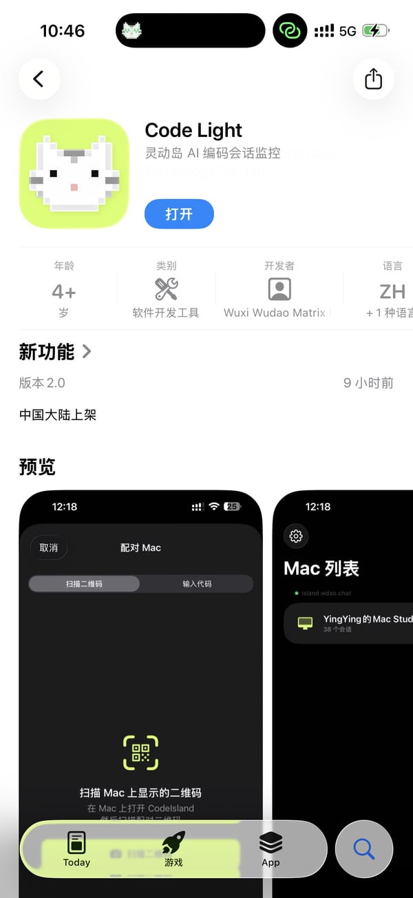
iPhone App Store · 搜索 "Code Light" — 灵动岛 AI 编码会话监控,中国大陆已上架。Mac 端通过上面的 brew 命令安装。
在 Mac 上打开 "Pair iPhone"
启动 Mio Island 后, 鼠标移到刘海上, 菜单展开 → 点 Pair iPhone。
或者: 系统设置 → CodeLight 标签 → 右上 "配对新手机" 按钮。
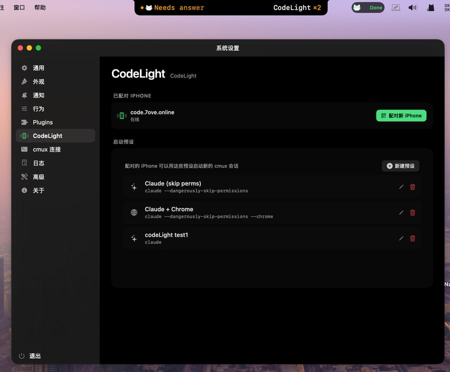
Mio Island · 系统设置 → CodeLight 标签。右上角绿色 "配对 iPhone" 按钮就是入口,下方还能看到 cmux 启动预设。
填服务器地址,拿到二维码 + 6 位配对码
首次打开会看到服务器 URL 输入框,填官方地址:
https://code.7ove.online
点 Save and Connect, 等 1-2 秒。连接成功后,面板自动切到配对就绪状态:
- 中间是 二维码 (约 160×160), iPhone 直接扫
- 下面是 6 位大字配对码 (示例
XXXXXX), 也可以手动输入 - 底部两个胶囊: 服务器地址 (点击可改) + 当前 Mac 设备名
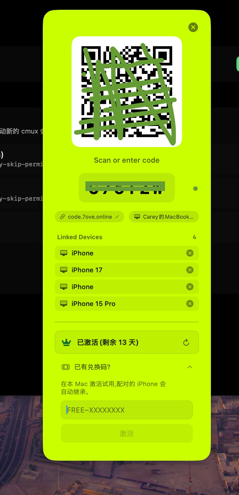
配对面板:中央 QR 码 + 下方 6 位字符配对码,两个胶囊显示服务器 code.7ove.online 和设备名,Linked Devices 列出已配对 iPhone,底部"已有兑换码"可输入 10 天免费兑换码。
配对码永久有效,同一个码可以配多台 iPhone (办公 + 私人机),不过期、不自动刷新。只有换服务器才重新生成。
在 iPhone 上打开 CodeLight 并配对
下载 CodeLight 后首次启动, 会看到配对引导:
- 方式 A · 扫码: 允许相机权限 → 对准 Mac 上的二维码 → 服务器地址 + 配对码自动填好
- 方式 B · 手输: 服务器 URL 填
https://code.7ove.online, 配对码填 Mac 上显示的 6 位字符 - 点 "配对" 按钮, 等 1-2 秒
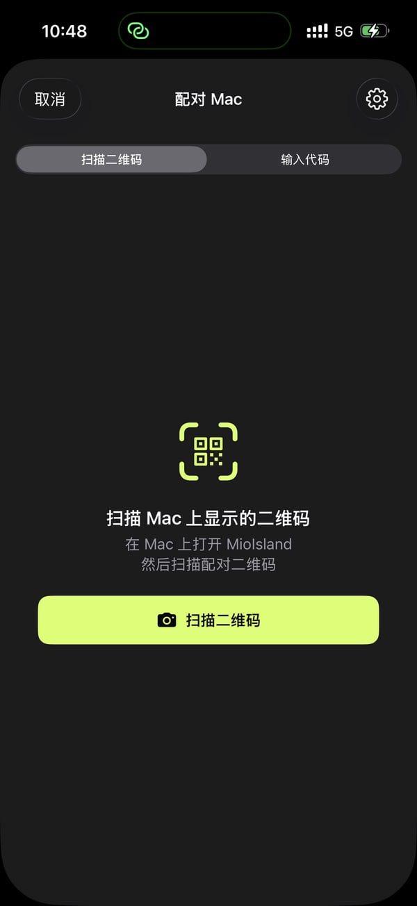
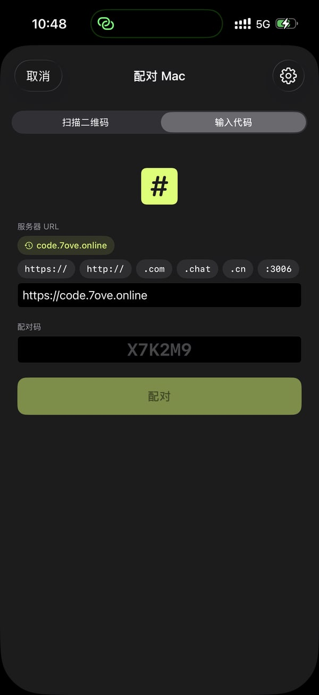
验证两端连接
- Mac 端: 面板下方多出 "Linked Devices" 一栏, 列出刚配的 iPhone 名字
- Mac 刘海菜单: "Pair iPhone" 那一行右侧出现柠檬绿点 + "Online" 字样
- iPhone 端: "Macs" 列表里多出这台 Mac
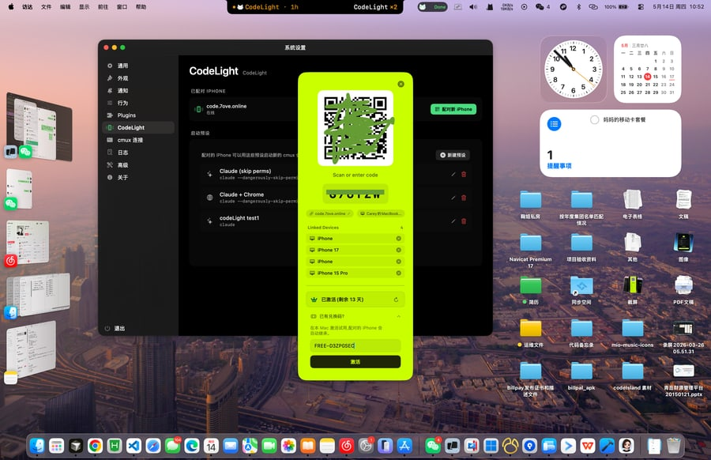
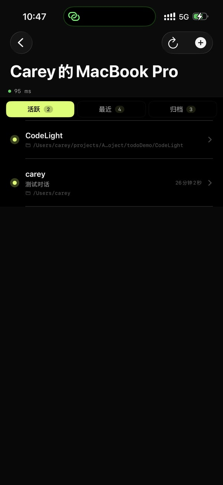
开启 Hooks · 验证转发链路
配对只是建了通道,要让 Claude Code 状态真正流到 iPhone,还得保证 Mac 端的输入 (hook) + 转发 (cmux) 两侧都通。打开:
系统设置 → cmux 连接 标签,看四项诊断:
- cmux 命令行 · 已找到 (绿点)
- 辅助功能权限 · 已授权 (绿点)。未授权会导致 AppleScript 转发静默失败 — 点下方 "修复辅助功能权限" 按钮跳转系统授权页
- 自动化权限 · cmux ✓ (绿点)。未授权点 "修复自动化权限"
- 检测到的 Claude 会话数 · > 0 (绿点)
点 测试发送 按钮,iPhone 锁屏几百毫秒内应该看到 Live Activity 弹出一条测试消息 — 链路就通了。
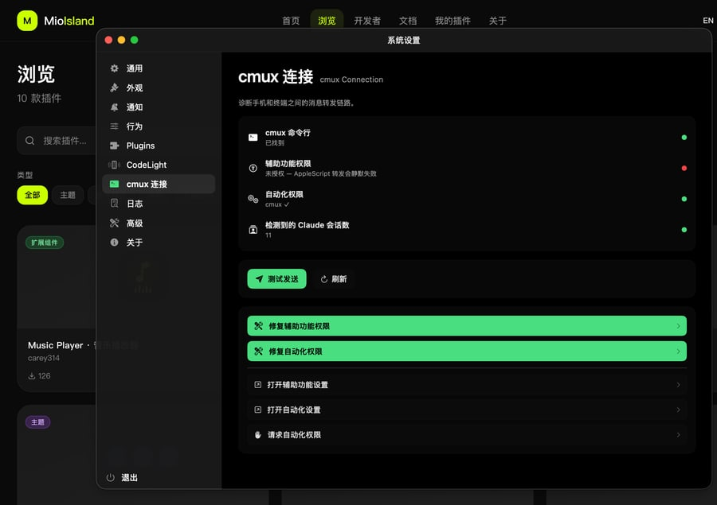
cmux 连接面板 · 四项诊断 + 测试发送按钮。任何一项红点 → 点下方对应的 "修复" 按钮一键跳转授权页;全绿 + 测试发送收到推送 = 转发链路 OK。
跑一次真实会话验证
- Mac 上打开终端, 在项目目录执行
claude - 问一个需要调工具的问题 (比如 "看下当前目录结构")
- 观察三处: Mac 刘海状态点 + 文字 / iPhone Dynamic Island 或锁屏 Live Activity
- 几百毫秒内三端同步显示 "Working..." / 工具名 / 完成
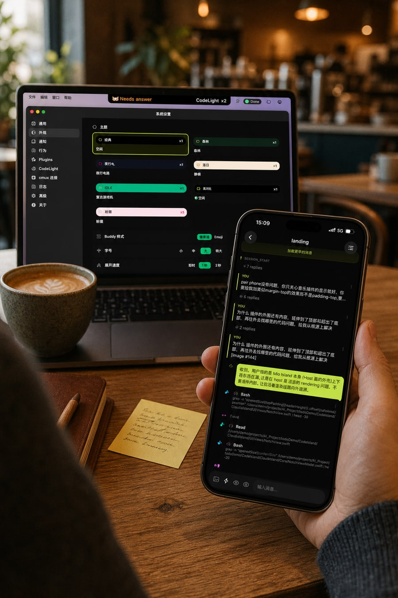
真实使用场景:Mac 上的 Claude 会话,iPhone 同时显示对话内容 — 端在 Mac,眼可以离开桌面。
CodeLight 的付费与免费活动
Mac 端 Mio Island 永久开源免费。iPhone 端 CodeLight 承担服务器带宽 + APNs 推送成本, 走轻付费模式:
免费试用 · 3 天
App Store 下载后首次连服务器自动开 3 天全功能试用,无需信用卡。
买断解锁 · ¥98 终身
App 内一次性购买,永久解锁。同 Apple ID 跨设备恢复,最多 3 台并发在线 (办公 + 家里 + iPad)。
免费持续用 · 发内容换兑换码
参与 "发一条, 免费用" 活动:
- 在任意公开平台 (小红书 / X / B站 / 即刻 / Twitter) 发一条关于 Mio Island 或 CodeLight 的内容 (体验、吐槽、教程都行)
- 打开下方自助领取页 → 选平台 → 贴链接 → 上传截图 → 通过人机验证 → 当场拿到兑换码
- 同一 IP 24 小时限领 1 次, 每轮 30 个名额抢完即止
- 授权用完再发一条, 继续来领 — 持续产出 = 持续免费
领取地址: https://admin.miomio.chat/claim/claim-2026-text-promo-1
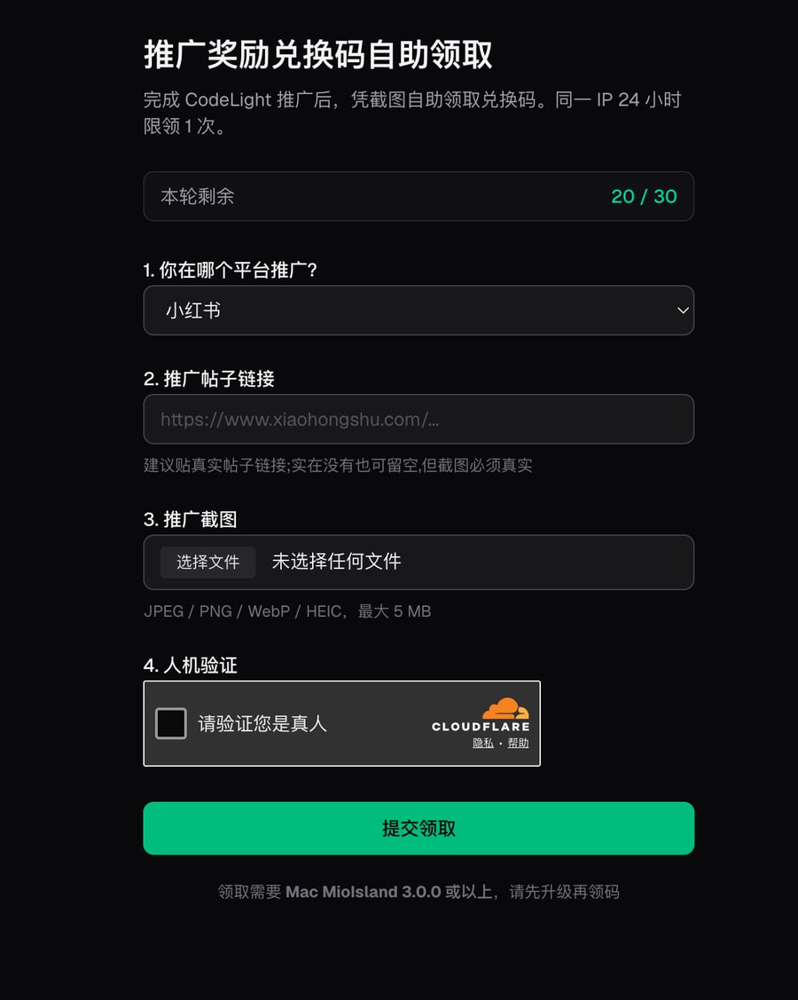
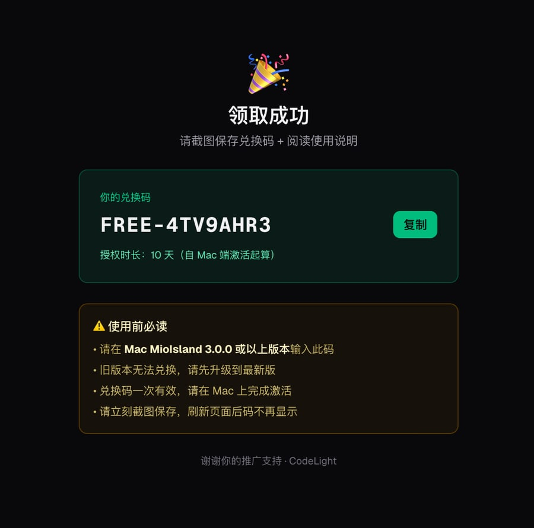
FREE-XXXXXX 格式) + 复制按钮 + 授权时长。请立刻截图保存,刷新页面后码不再显示。
v3.0.0+ 兑换流程: 在 Mac 端 Mio Island 的 Pair Phone 面板底部「已有兑换码」一栏输入 FREE-XXXXXX, Mac 端 trial 状态会自动通过 DeviceLink 同步给已配对的 iPhone (Apple Guideline 3.1.1 要求, 兑换入口从 iOS App 迁到 Mac 端)。
常见问题
CodeLight 多少钱?有没有免费方案?
三档:
- 3 天免费试用 — App Store 下载首次连服务器自动开,无需信用卡
- ¥98 终身买断 — 同 Apple ID 3 台并发,支持恢复购买
- 持续 0 元用 — 公开平台发一条内容,自助页 (上面付费 section 那个柠檬绿按钮) 当场领 10 天兑换码,授权用完再发再领
服务器能看到我的代码 / 消息吗?
不能。协议端到端加密 (Ed25519 签名 + 对称加密),服务器只做转发 — 不落盘、不记日志、不记 IP。
服务器数据库只存运行必需的最小信息:设备配对码、试用/付费状态、最后连接时间、APNs 推送 token。代码、消息、文件一概不存。
连不上 / 二维码出不来 / 一直转圈
按顺序排查:
- URL 必须
https://开头,浏览器能打开https://code.7ove.online - 防火墙 / VPN / 代理是否挡了 WebSocket (走 Socket.io)
- Mio Island 版本太老 → 升到 v2.1.9+
- 等几分钟服务器自恢复
配对成功了,但状态不同步
先看 系统设置 → cmux 连接 标签四项诊断 (Step 5 那张图),红的点对应"修复"按钮:
- 辅助功能权限 / 自动化权限 红 → 修复按钮跳到系统授权页打勾
- cmux 命令行 没找到 → 装 cmux 或检查 PATH
- Claude 会话数 = 0 → hook 没装,检查
~/.claude/hooks/codeisland-state.py和~/.claude/settings.json的 hooks 字段,然后重启 Claude Code 会话
一台 Mac 能配几台 iPhone? 反过来呢?
多对多。同一 6 位码可以配多台 iPhone (办公 + 私人机),同一台 iPhone 可以连多台 Mac 切换。付费账户服务器侧最多 3 台并发。
想完全停用 Mio Island 的钩子 (卸载状态同步)
系统设置 → 通用 → 钩子关掉。会自动:
- 从
~/.claude/settings.json删 Mio Island 的 hook 入口 (其他工具的 hook 不动) - 删
~/.claude/hooks/codeisland-state.py
刘海仍能用,只是 iPhone 端状态不再更新。